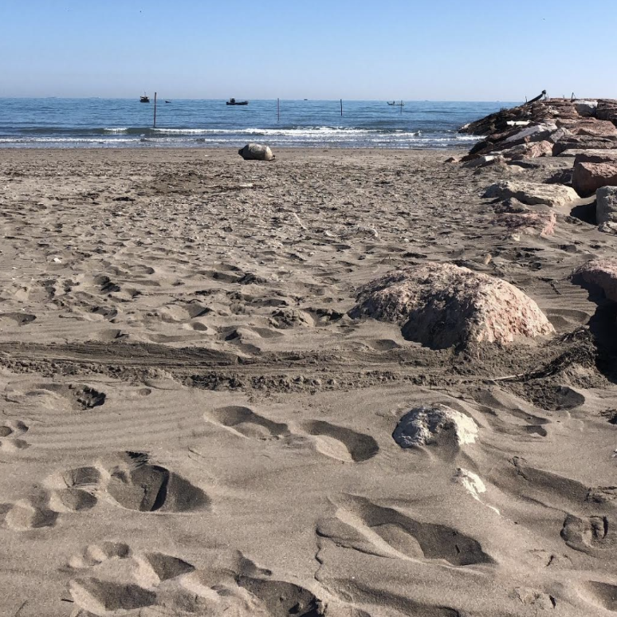
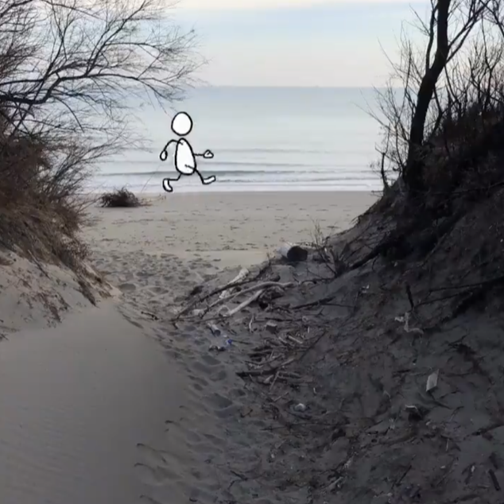
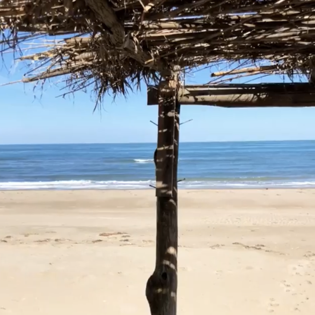
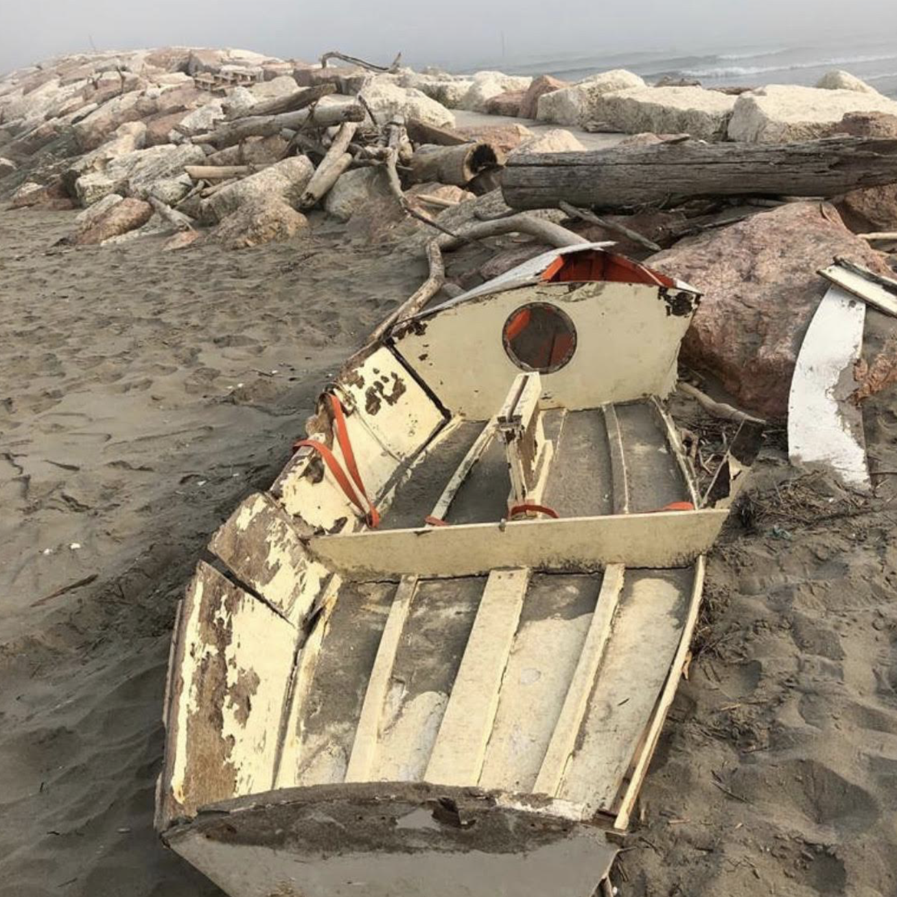

Walking by the beachspiaggia gives always a lot of calm to you, and it allows to regenerate your senses.

The beach of Pellestrina is 12 kilometerschilometri long so you have a lot of time and space to reorder your thoughts while walking.
While walking along the see you can notice how interesting are all the cabinscapanne built by the local to be repared from the sunsole during the hot days.

You can also find broken boats along your path. But don't worry, tomorrowdomani they won't be there anymore. Old fishermen take care of this problems in the island.

After your walk you can either go to have lunch at your father's restaurant or go to Manuel's where your friends are having a last minute barbecue. What do you feel like?